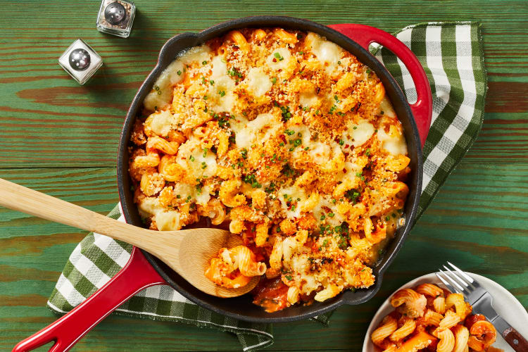

Roasted Pepper Cavatappi Milano Dish
No matter the weather, it’s impossible not to daydream about a bubbly, soul-warming pasta dish. Well, folks, that dream is now a reality. This delicious dish has curly cavatappi and tender strips of roasted bell pepper cloaked in a creamy tomato-herb sauce. It’s topped off with fresh mozzarella and crispy panko before being broiled to gooey, golden-brown perfection. Yep, this one-pan wonder is guaranteed to satisfy all your carby cravings. (We’re all about making dreams come true.)
Ingredients
- 1 Red Bell Pepper
- 14oz Marinara Sauce
- 1/4 cup of Panko Breadcrumbs
- 2tbs Cream Cheese
- 10oz raw Shrimp
- 4oz Fresh Mozz
- 1tsp Chili Flakes
- 6oz Cavatappi Pasta
- 1/4oz Chives
- 1tbs Butter
- 2tbs Olive Oil
- Salt
- Pepper
Instructions

- • Adjust rack to top position and preheat oven to 400 degrees. Bring a medium pot of salted water to a boil. Wash and dry produce. • Halve bell pepper lengthwise; remove stem and seeds. Thinly slice chives. Tear mozzarella into bite-size pieces.

- • • Rub each bell pepper half with a drizzle of olive oil; season with salt and pepper. Place on a baking sheet, cut sides down. • Roast on top rack until softened and lightly charred, 20-25 minutes. • Remove from oven and let cool slightly. Transfer to a cutting board, then thinly slice. • Heat broiler to high.

- • While bell pepper roasts, place 1 TBSP butter (2 TBSP for 4 servings) in a small microwave-safe bowl; microwave until just melted, 30 seconds. Stir in panko and season with salt.

- • Once water is boiling, add cavatappi to pot. Cook, stirring occasionally, until al dente, 9-11 minutes. • Drain and set aside.

- • While pasta cooks, heat a large, preferably ovenproof, pan over medium-high heat. Add marinara, ½ cup water, half the chives, a pinch of chili flakes, and a big pinch of salt; stir to combine. Bring to a boil, then reduce heat to medium. Simmer until slightly thickened, 3-5 minutes. • Turn off heat; stir in cream cheese until melted and combined. Season with salt and pepper.

- • Stir sliced bell pepper and drained cavatappi into pan with sauce. If sauce seems too thick, add a splash of water. Season with salt and pepper. (TIP: If your pan isn’t ovenproof, transfer mixture now to a baking dish.) Sprinkle with mozzarella and panko. • Broil on top rack until cheese melts and panko is golden brown, 2-4 minutes. TIP: Watch carefully to avoid burning. • Sprinkle with remaining chives and more chili flakes if desired. Divide between plates and serve.